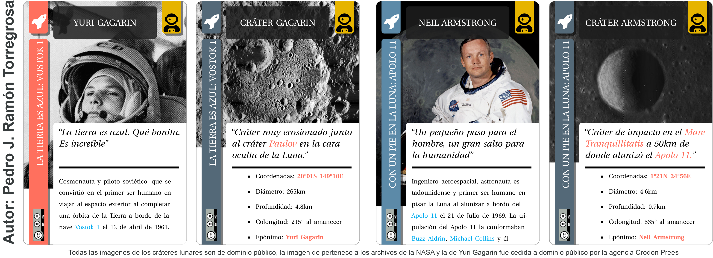
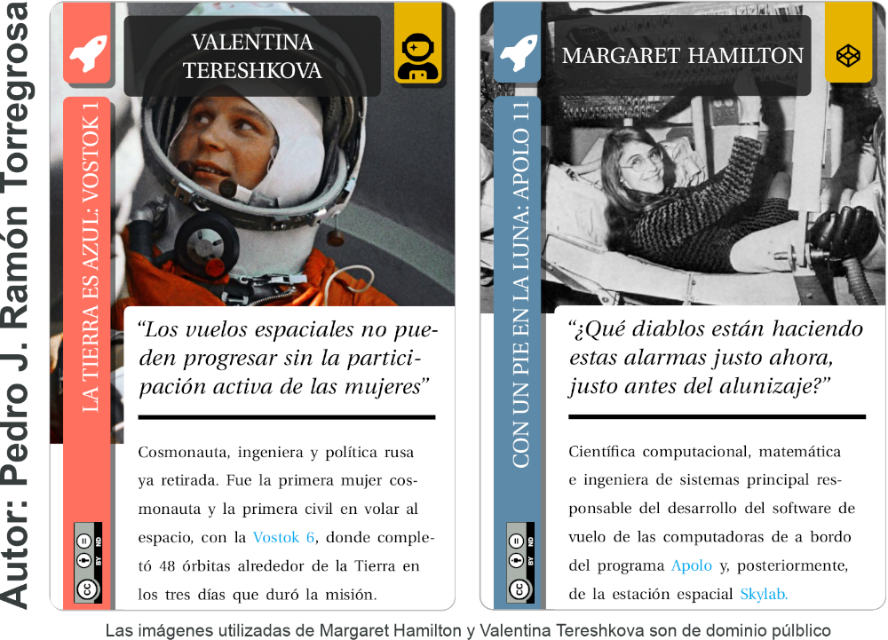

Pioner@s de la carrera espacial
Igual que la carrera espacial no anduvo falta de épica también son notables sus protagonistas; tanto los más conocidos para el gran público como pueden serlo Yuri Gagarin (URSS), quien el 12 de abril de 1961 se convertiría en el primer ser humano en el espacio al orbitar, a bordo de la Vostok 1, durante 108 minutos completó tres órbitas alrededor de la Tierra, o Neil Armstrong (USA) que se convertiría en el primer homo sapiens en poner un pie sobre la superficie lunar el 20 de julio de 1969.

Sin embargo, aunque mucho más desconocidas, la historia también reservaba un lugar de privilegio para un buen puñado de mujeres que, tanto en el bando soviético como en el estadounidense, tenían mucho que decir en la recién nacida ingeniería aeroespacial. Aunque podríamos centrarnos en las figuras de JoAnn Morgan, Katherine Johnson, Tatiana Kuznetsova o Valentina Ponomariova, dos mujeres, una por cada bando, jugaron un papel fundamental en dos de los programas espaciales icónicos de la carrera espacial; el programa Vostok y el programa Apolo: Valentina Tereshkova y Margaret Hamilton.

Analicemos a continuación la vida y obra de cada una de estas dos mujeres (Valentina Tereshkova y Margaret Hamilton), qué papel jugaron en la carrera espacial y cómo han contribuido al desarrollo de la ingeniería aeroespacial tal y como la conocemos hoy en día.